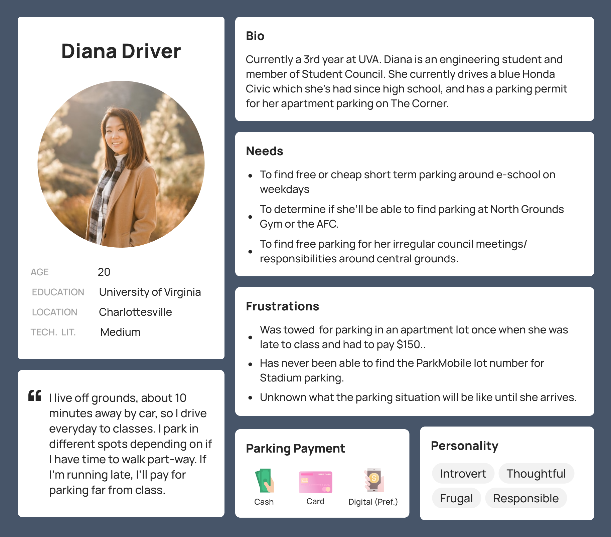

- Daily Commuters: Users that need to drive to grounds for work, school, or on-grounds housing very regularly.
Goal of using our app is to save regular commute information and detect/report changes in their regularly planned parking/commute.
- Semi-Regular Commuters: Users that need to drive to grounds for work or school semi-regularly.
Goal of using our app is to find parking on grounds which involves checking information about real-time or planned commutes.
- Temporary visitors: Users that come to visit friends or attend special events.
May not have a goal of using our app, but if they do the goal is to familiarize themselves or help navigate unfamiliarity with parking on grounds for very specific, irregular periods of time.
UX Research, UX design, ui design
Wahoo Zones
A mobile app design to help students, staff, and visitors find parking around grounds
Role
Design Lead
Timeline
Sept - Dec 2023
Team
5 UX Students
Skills
Interaction Design, User Research, Usability Testing
Tools
Figma
introduction
Background
In this semester-long final project for HCI in Software Development, my team designed a mobile app prototype to tackle the problem of parking around UVA’s campus.
As the design lead, I worked to conduct user interviews, draw insights from research data, design the information architecture and wireframes, and establish a design system.
Our client for this project was UVA’s Parking and Transportation office, but the app’s target users were UVA students.
introduction
The Problem
Parking around UVA is particularly difficult.
Whether it be due to constant construction, a shortage of parking spots, between-class traffic, or special events, initial research revealed that 90% of surveyed students found parking around Grounds to be more challenging than elsewhere.
The Challenge
To streamline the parking experience, providing users with a straightforward, digital way to determine where spots are available.
Our ultimate goals were to reduce annoyance, time spent searching for a spot, and parking fines.
Problem Research
Why Is Parking a Problem?
We conducted an exhaustive survey of parking options available in Charlottesville. Surprisingly, we discovered lots of free or cheap parking around academic buildings that none of us or our interviewees knew about.
Why then, is it difficult for students to access this information? Why is it so hard to find parking?

These images serve as a snapshot of the parking environment at UVA, revealing physical challenges important to understanding the problems users have with the current system.
Common barriers include poor sign visibility, inconsistent signage, constant construction, ambiguous permit labels, over-reservation of parking spots, and a lack of centralized information.
In other words, environmental factors of a busy, dynamic college town create confusion and frustration for users, making it difficult to understand where they are allowed to park.
Are There Existing Solutions?
We took a look at ParkMobile, the predominant parking app at UVA, which had been used at least once by 100% of our initially surveyed users.
We found that ParkMobile focused on facilitating payment for parking spaces, which differs from our objective of helping drivers find parking. However, we still found value in exploring its map interface.
This audit allowed us to examine various interfaces within transportation apps, which helped guide our ideation process.
User Research
Who Are Our Users?
We first brainstormed all possible candidate personas – our potential types of users. We then grouped these candidates into selected personas based on shared goals of using our app, all of whom would need to be considered in our app's final design:
From this list we selected our primary persona.
We identified UVA students as our primary stakeholders, focusing on those who commute by personal vehicle and need short-term parking. Students who use alternative transportation or have long-term parking solutions are less likely to benefit from the app.

Hearing From Users
We conducted interviews across the range of our user classes, creating a set of base interview questions.
The goal of these interviews was to understand the context in which users make parking decisions, including obstacles and emotions through the process of finding parking.
We found that interviewees were (1) most interested in finding free parking, (2) very unsure of where they were allowed to park on grounds, (3) found the parking process on grounds too difficult or time consuming, and (4) often parked illegally or far away for lack of better options.
Rapid Spin
Rapid Design
Based on this initial understanding of the problem and users, we spent a week creating an initial iteration of our idea and bringing it to users to test the validity of our solution.
First, we produced a list of key requirements for the app, which I translated into features and organized into screens.
After paper sketches and picking between iterations in Figma, this was the final mid-fidelity design for this phase:
Rapid Evaluation
We conducted small group interviews testing this initial prototype with 20 potential users. Each person in a small group was given a specific task to complete.
User Tasks
- Register an account
- Navigate to a parking lot's details page
- Report police handing out parking tickets on Jefferson Park Avenue
- Add a permit to your account
Feedback Received
- While the map was intuitive, users struggled with other navigation tasks, particularly account management.
- Several expressed wanting to know upfront the availability of parking spaces.
- All users were very interested in the reporting feature as a way of staying informed about towing risks.
- Most stated they trusted crowd-sourced information and would be willing to contribute alerts themselves.
This feedback showed us that potential users were interested in our app, and that live capacity information and crowdsourced reports were most beneficial to potential users. We decided that in an ideal implementation, available parking spots are identified by satellite technology and updated in real time. It also highlighted the importance of the parking lot details screen in enabling users to quickly assess lot viability.
Design
User Insights → Design Requirements
We worked to turn specific opinions, hurdles, or suggestions from our initial interview notes and rapid spin feedback into sticky notes, and organized these notes into a physical affinity diagram.
We then translated this affinity diagram into a list of requirements that our app had to meet in addressing the needs of our users, and turned these requirements into interactions that our app would support.
Referring back to these lists throughout iterations ensured that our system remained rooted in user research and supported all of the interaction goals of users.
Some unexpected findings were that (1) users wanted the contact information of authorities of the parking lot, (2) users were extremely interested in towing/ticketing information for lots, (3) some wanted the ability to pay or be directed to the appropriate payment platform, and (4) users needed to be able to give feedback about the accuracy of the information presented.
Ideation & Sketching
My group sat down with our individual sketches as well as our user tasks derived from system requirements, and compared each version of each feature, discussing the usability, aesthetic, and functionality of each rendition.
Sometimes this would result in scrapping an unnecessary feature entirely or drafting a new version that combined previous iterations.
At this point my team chose to focus on designing the default guest login version of the app, removing the settings and profile pages. This is because none of our participants were interested in creating an account, and the settings page offered little value for this MVP.
We ended up with the intermediate design below.

Prototype & Evaluation
High Fidelity Prototype
Based on this sketch, we developed a high-fidelity prototype to evaluate our design's effectiveness in making parking lots discoverable.
Digestible Map
The map allows users to see the status of many parking lots at a glance, reducing cognitive load through the use of intuitive symbols and color coding. Tapping on corresponding pins on the map brings up the parking lot’s details.
Informative Details
This information screen includes the lot’s pricing, open hours, and capacity levels. Graphs indicating the capacity, activity, and risk of towing and ticketing provide valuable and easily understandable information to users. Finally, the "Pay" and "Go" buttons allow users to transition from searching to navigation to payment more seamlessly.
Smart Search
Clicking into the search box brings up favorites and recent searches, ensuring easy access without cluttering the home screen. Selecting one of the results brings users to a map view of the location.
Crowdsourced Reports
Tapping the report button pops out into a menu of report options such as closures, hazards, police sightings, and tow trucks. These reports can be placed on the map, and remain available on every user’s map for several hours.
UX Targets
Below is the list of UX targets I created based on our initial goals of reducing annoyance and time spent searching for a spot for users.
Testing Our Solution
Now with our prototype and UX targets, we conducted a usability test with 9 participants to determine the effectiveness of our solution and potential points for improvement.
We asked them to complete the benchmark tasks as written in the UX target table. At the end, participants were asked to complete this survey.
Final Results
Overall, the lowest average was on the question of how likely users would be to use the fully developed app. While the average rating for this question was still positive, it could suggest that users aren’t very excited about the potential for this app to solve the problem of parking. Going forward, this lack of excitement or certainty is an insight that the team should work on improving.
The second lowest averages were tied across 3 questions. A lower rating on these questions could indicate that the user flows for in-app navigation and parking lot search could be improved, as well as the quantity and clarity of the lot details page content should be improved.
Our primary goal was to reduce user frustration surrounding and time spent searching for parking. The success of our app in solving this problem heavily depends on presenting reliable data, which is currently represented by static placeholders in the prototype.
Thus, the next steps for this project would be integrating live parking data into the app, as well as figuring out the backlogged user profile and settings functionalities.
Reflection
What I Learned
This was one of my first UX projects. Through this project, I learned how to lead a team, how to root my design in data, and the importance of updating and referring back to research artifacts across a long project timeline.
Here is the final round of feedback I received from members of my project team.
“Ciel is amazing organizationally and is always a pleasure to work with. She is great at communicating, always gets her work done on time, and her work is always complete and thorough. She also always offers to step in and help others.”
- Anonymous 1
“Ciel has been an amazing team member to work with. She is great at deconstructing any deliverables that need to be completed, and is good at delegating any tasks required. She additionally is very communicative and perceptive.”
- Anonymous 2
“Ciel has consistently maintained high standards in her work. Her ability to complete all assigned tasks efficiently and her proactive approach to project management contributed significantly to our project's progress. Task Management: Ciel's ability to manage and complete her tasks effectively is a testament to her strong organizational skills. Her initiative in ensuring the smooth running of the project and her readiness to assist others have been vital to our team's success.”
- Anonymous 3
“The performance of Ciel as a team member has been exemplary. She consistently meets deadlines and approaches her responsibilities with a commendable attitude. Her active participation in group discussions coupled with her propensity to offer new ideas and constructive feedback significantly enhances the team's dynamics. Ciel exhibits a proactive stance in initiating new tasks, often leading by example. Her contributions are crucial to the group's success, making her an invaluable asset to the team.”
- Anonymous 4
Overall, I’m very grateful to my team and professors for this learning experience!